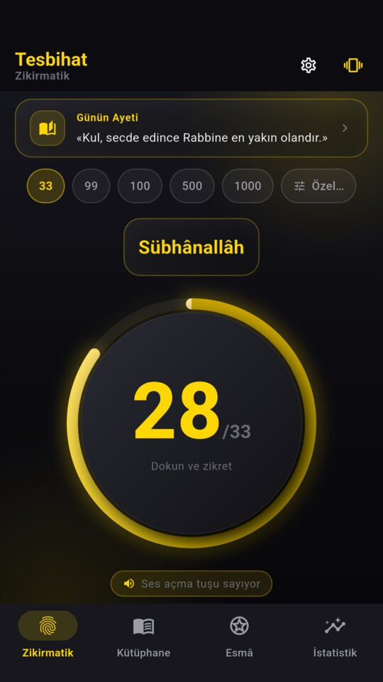
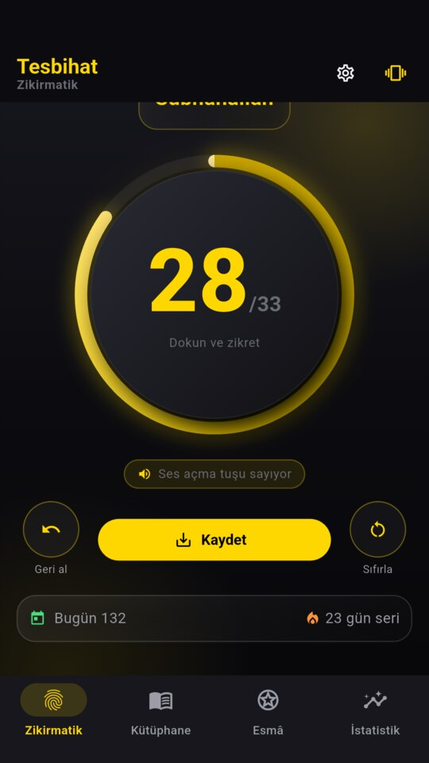
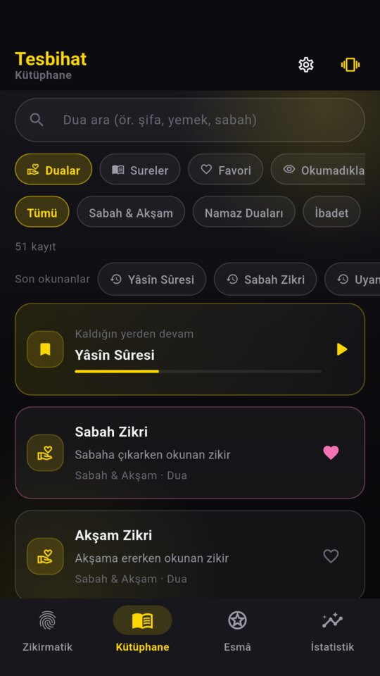
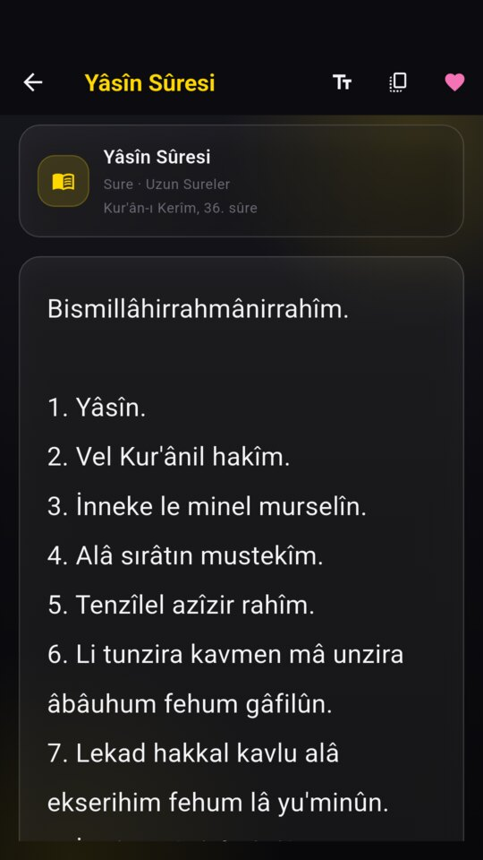
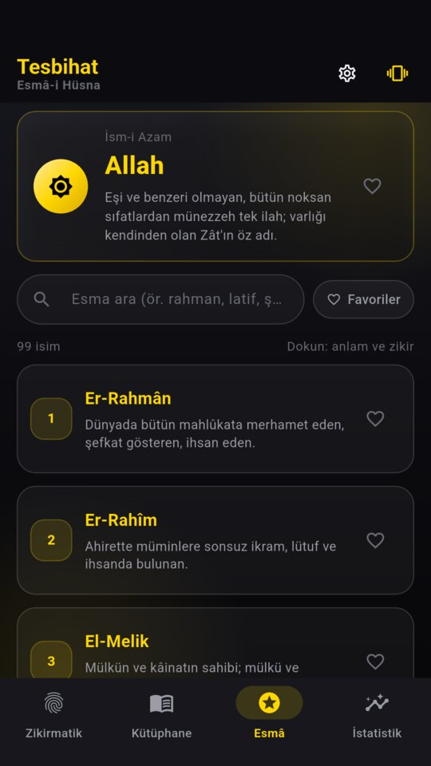
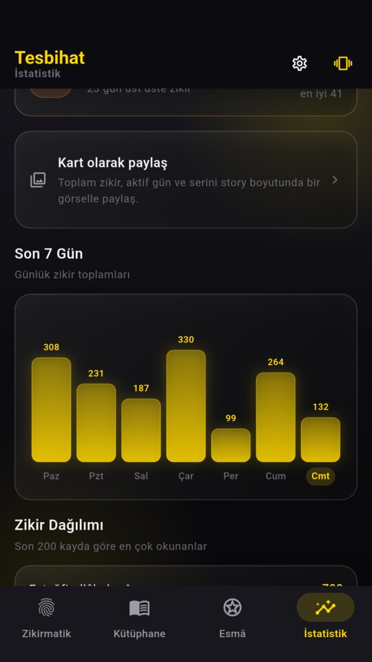
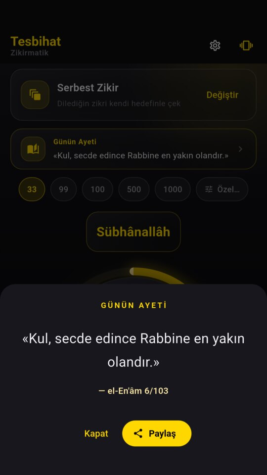
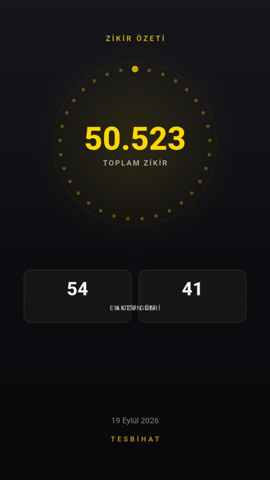

4SL4N Studio
Tesbihat
Zikirmatik, dua ve Esmâ-i Hüsna.
Tamamen çevrimdışı, tüm özellikleri ücretsiz.
sürüm 1.0.0 · 55,6 MB · Android 7.0 ve üzeri
- Hesap gerekmez
- İnternetsiz çalışır
- Veriler cihazda kalır
01Neler var?
Zikirmatik
Dairesel ilerleme halkası, animasyonlu sayaç ve haptik geri bildirim. Hazır hedefler (33 / 99 / 100 / 500 / 1000) ya da kendi hedefin.
Ekrana bakmadan say
Zikirmatik ekranındayken ekran kararmaz; istersen ses açma tuşu senin yerine sayar — zikri yürürken, yolda sürdürebilirsin.
9 zikir programı
Namaz Sonrası Tesbihat, Tesbîh Üçlemesi, Salavat-ı Şerîfe, İstiğfar, Kelime-i Tevhîd, Sabah–Akşam, Yâ Latîf, Yâ Şâfî ve Serbest Zikir.
51 dua
Sabah & akşam, namaz duaları, ibadet, yemek, yolculuk, günlük hayat, şifa & zorluk ve özel vakitler; arama, kategori ve favorilerle.
33 sure ve âyet
Fâtiha'dan Nâs'a kısa sureler, Yâsîn, Âyetü'l-Kürsî, Âmenerrasûlü… Kaldığın yerden devam eder, “okumadıklarım” filtresi vardır.
99 Esmâ-i Hüsna
Her ismin anlamı ve âyet bağlantısı; tek dokunuşla o ismin zikrini başlatıp zikirmatiğe aktarabilirsin.
İstatistik ve gün serisi
Bugün / 7 gün / 30 gün / toplam, 7 günlük grafik, gün serisi takibi ve paylaşılabilir özet kartı.
Akıllı hatırlatıcı
Seçtiğin saatte nazik bir bildirim: hedefi tamamladıysan susar, akşam hâlâ kaldıysa hatırlatır; dokununca doğrudan zikirmatik açılır.
Günün âyeti ve hadisi
Her gün, kaynağı belirtilmiş bir âyet veya hadis; tam ekran okuma ve tek dokunuşla paylaşma.
02Ekran görüntüleri








← yana kaydır →
03Kurulum — bir dakika
- İndir. Yukarıdaki “APK'yı indir” düğmesine dokun; 55,6 MB boyutundaki dosya iner.
- İzin ver. “Bilinmeyen kaynaktan yüklemeye izin ver” çıkarsa onayla. Bu izin yalnızca tarayıcı için, yalnızca ilk kurulumda sorulur.
- Kur ve aç. Play Protect “yine de kur” derse onayla; uygulama açılmaya hazırdır.
Dosya Android içindir, iPhone'a kurulmaz. Kurulum için gereken internet yalnızca indirme içindir; uygulama kurulduktan sonra internetsiz çalışır.
04Merak edilenler
Neden Google Play'de değil?
Uygulama şu an doğrudan APK olarak dağıtılıyor. Mağaza kaydı için gereken hazırlıklar tamamlandı; Play'de yayına girdiğinde bu sayfadan duyurulacak. APK sürümü ile Play sürümü aynı uygulamadır.
Güncellemeler nasıl gelir?
Yeni sürüm çıktığında aynı sayfadan indirip üzerine kurabilirsin; zikir sayıların, serin ve ayarların korunur. Play sürümüne geçildiğinde kurulum farklı imzayla gelir; o gün eski sürümü kaldırıp yeniden kurmak gerekebilir — öncesinde Ayarlar → yedek al yeterlidir.
Verilerim nereye gidiyor?
Hiçbir yere. Uygulamanın sunucusu ve üyeliği yoktur; zikir sayıların, favorilerin ve okuma konumların yalnızca kendi cihazında saklanır. Yalnızca reklamlar için Google AdMob teknik verileri kendi politikası çerçevesinde işler. Ayrıntı: gizlilik politikası.
Reklamlar rahatsız eder mi?
Uygulama reklamlarla ayakta duruyor ve tüm özellikleri ücretsiz. Banner altta durur; tam ekran geçiş reklamı ise seyrektir (en fazla günde birkaç kez, en az 3 dakika arayla) ve zikir akışını ya da okuma ekranını hiç kesmez.
Dosya güvenli mi?
Dosya, uygulamanın kendi kaynak deposundan üretilen release sürümüdür ve yayın anahtarıyla imzalanmıştır. Aşağıdaki SHA-256 özetiyle indirdiğin dosyayı doğrulayabilirsin. Android sürüm 7.0 ve üzeri gereklidir.
05Dosya doğrulaması
İndirdiğin APK'nın bütünlüğünü kontrol etmek istersen SHA-256 özeti:
2bf6b30c13d404761b4bf27457b83fd701bef76776435204f004cc802efadd9e